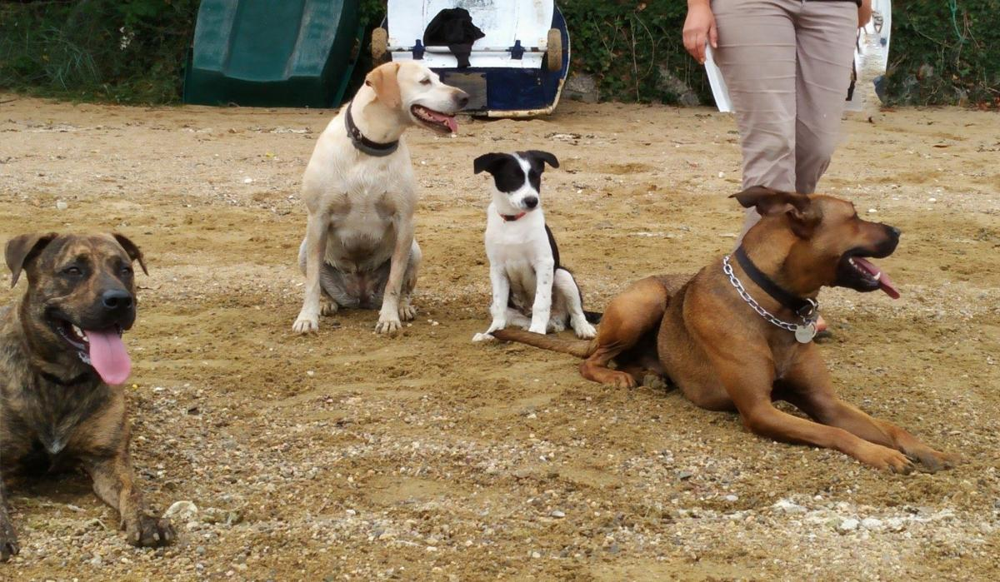

Prenons contact !
06 58 49 34 12 elisesola@orange.fr HAppy’Home sur Facebook La Haute Galais, 35730 Pleurtuit.
Interventions sur les chiens agressifs,
phobiques, malpropres, destructeurs,
bruyants, agités. lire plus →
Education ou rééducation du chiot et du chien adulte. lire plus →
Balades collectives et séances de socialisation et sociabilisation. lire plus →
Un programme personnalisé qui se déroule à votre domicile et sur terrain clos basé à Pleurtuit. lire plus →
Des méthodes douces et efficaces qui s’appuient sur le langage canin. lire plus →
Horaires
Ouvert du lundi au jeudi de 9h00 à 19h30.
Le samedi de 9h00 à 16h00.
Fermé le dimanche et les jours fériés